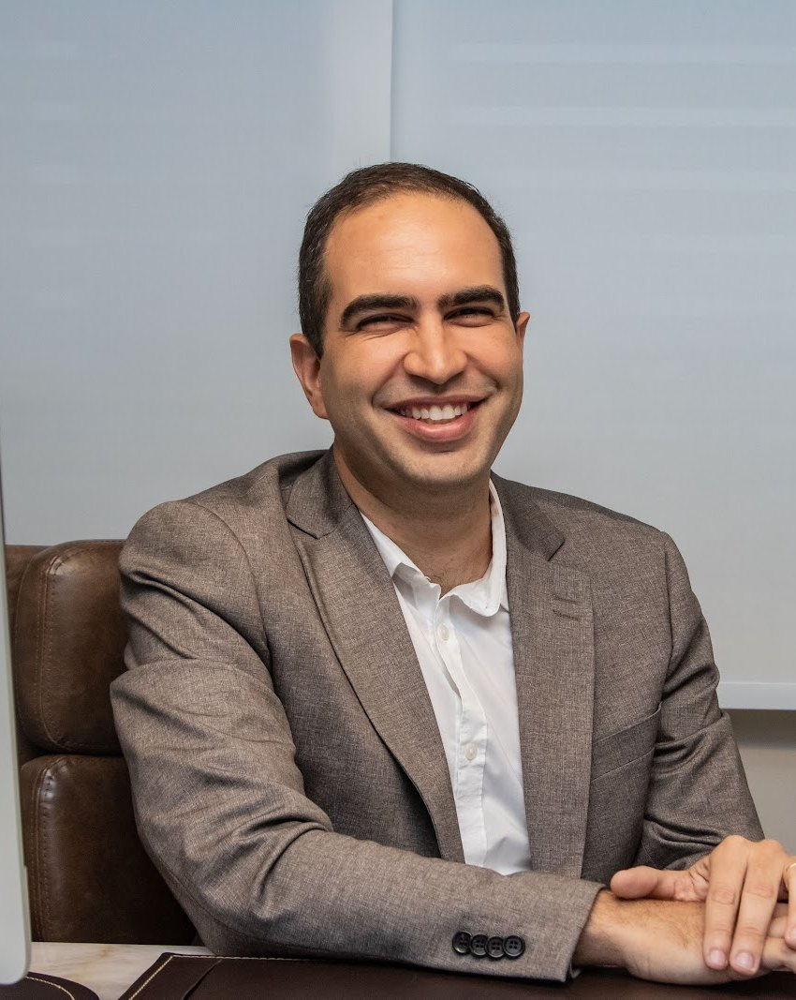
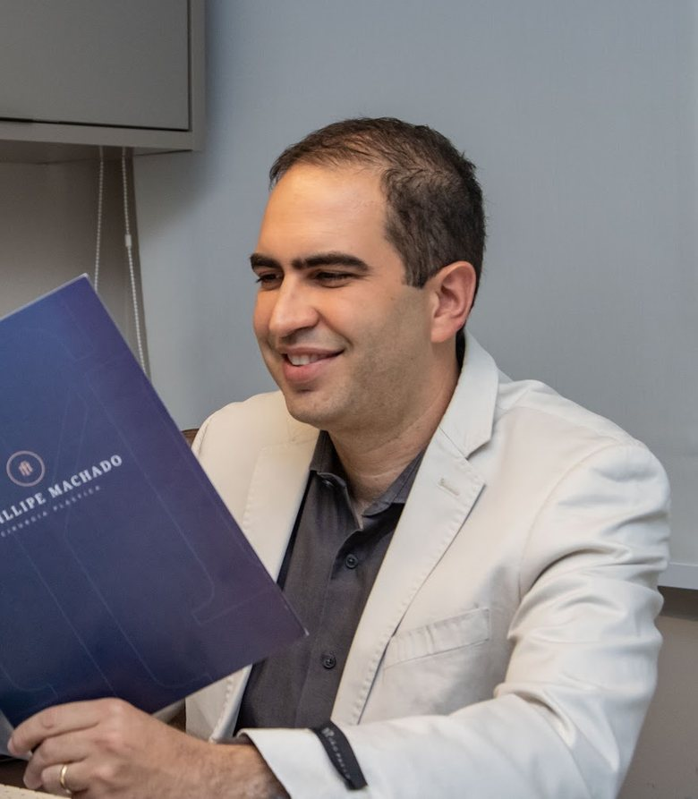

Salvador
Empresarial Cidade JardimRua Leonor Calmon, 44 · Candeal
Segunda a sexta, das 8h às 18h, com hora marcada (ficha do Google).
No Linktree dele: “Atendimento em Salvador”
Título de especialista em Cirurgia Plástica (SBCP, 2018)
Cirurgia das mamas, abdome e lipoaspiração — as áreas que ele mesmo destaca — e cirurgia reparadora, que ele acompanha no hospital universitário da UFBA.

 No consultório, em Salvador
No consultório, em SalvadorPor onde começar
“Cirurgia Plástica de Mamas, Abdome e Lipo” — é assim que o Dr. Fillipe resume o próprio trabalho no Linktree. Escolha o assunto e leia com calma antes da consulta. A informação é geral; a indicação é individual, definida em consulta.
Aumento com prótese de silicone, mastopexia e mamoplastia redutora.
Cirurgia das mamasAbdomeAbdominoplastia e diástase dos retos, depois da gestação ou de grande perda de peso.
AbdomeContornoLipoaspiração e contorno corporal: o que trata e o que não trata.
Lipo e contornoReparadoraCorreção de cicatrizes, queloides e retirada de tumores de pele.
Cirurgia reparadoraDuas cidades, um mesmo cuidado
No Linktree do Dr. Fillipe há só dois botões: “Atendimento em Salvador” e “Atendimento em Feira de Santana”. Os dois levam ao mesmo número, (71) 99920-2603. Escolha a cidade mais perto de você.
Empresarial Cidade JardimRua Leonor Calmon, 44 · Candeal
Segunda a sexta, das 8h às 18h, com hora marcada (ficha do Google).
No Linktree dele: “Atendimento em Salvador”
Ed. Mut Boulevard FeiraAv. Gov. João Durval Carneiro, 3665
Com hora marcada: confirme dia, horário e sala pelo WhatsApp.
No Linktree dele: “Atendimento em Feira de Santana”
Percurso
A formação e os vínculos hospitalares do Dr. Fillipe estão registrados no Cadastro Nacional de Estabelecimentos de Saúde; o título de especialista, na lista oficial da SBCP. Cada etapa traz a fonte ao lado.
Médico residente no Hospital Geral do Estado (04/2012–03/2018) e no Hospital Santo Antônio (05/2012–11/2017).
CNESVínculo como cirurgião plástico no Instituto de Medicina Integral Prof. Fernando Figueira (11/2016–01/2018).
CNESAprovado no exame da Sociedade Brasileira de Cirurgia Plástica de março de 2018.
Lista oficial da SBCPCirurgião plástico do HGE, em Salvador (04/2018–10/2023).
CNESCirurgião plástico do hospital universitário da UFBA desde 03/2023, e docente listado em Cirurgia Plástica Reparadora.
CNES · SUPAC/UFBA
Na voz do Dr. Fillipe
“Nem sempre é possível equilibrar tudo, mas tenho a sorte de exercer uma profissão que reflete os valores em que acredito e a forma como escolho viver.”
Dr. Fillipe Machado, publicação na ficha do Google, 16/09/2026 · ver a ficha
“Saber que você escolheu realizar mais de um procedimento comigo e que se sentiu segura e bem cuidada em todas as etapas é muito especial. Agradeço também pelo reconhecimento ao trabalho da minha equipe.”Dr. Fillipe Machado, resposta a uma avaliação no Google · ver a ficha
Avaliações
Trechos curtos de avaliações públicas, sobre o atendimento. Nomes abreviados.
Seu cuidado não termina na cirurgia. Ele acompanha seus pacientes por vários meses após o procedimento.
Sua forma de tratar seus pacientes, com calma, respeito e humanidade.
A postura humana, ética e acolhedora durante todo o acompanhamento.
Cuidado especial em ouvir minhas dúvidas e expectativas.
Sempre me deixando muito à vontade durante todo o processo.
Um tratamento humanizado e personalizado.
Ele nunca deixou de me responder nas mensagens.
Fui muito bem atendida por Dr. Fillipe Machado, bastante atencioso, gentil e prestativo.
Ver todas as avaliações na ficha do Google · 2 opiniões também na Doctoralia
Hospital universitário
No quadro de horários da Faculdade de Medicina da Bahia (UFBA, 2022-2), o nome do Dr. Fillipe aparece entre os docentes de MED132 – Cirurgia Plástica Reparadora. No CNES, ele é cirurgião plástico do Hospital Universitário Professor Edgard Santos (HUPES/UFBA), onde atua desde 2023.
Quadro de horários · SUPAC/UFBA · CNES
Cirurgia reparadoraMamas, abdome e lipoaspiração: cirurgias que mudam forma e proporção, quando há indicação.
Cirurgia das mamasCicatrizes que repuxam, queloides e retirada de tumores de pele com reconstrução do local.
Cirurgia reparadoraPara conferir
A lista de títulos da SBCP, o quadro da UFBA, a ficha do Google e o Linktree. Tudo com link, para você conferir.
A lista oficial de março de 2018 traz o nome Fillipe Almeida Machado (nº 87).
Ver a lista ↗UFBACirurgia Plástica Reparadora (MED132)Quadro de horários da Faculdade de Medicina da Bahia, 2022-2, com o nome dele entre os docentes.
Ver o quadro ↗GoogleFicha do consultórioNota 5,0 em 18 avaliações, todas respondidas, com publicações e fotos do consultório.
Abrir a ficha ↗LinktreeAgendamentosOs dois caminhos que ele publica: atendimento em Salvador e em Feira de Santana.
Abrir o Linktree ↗Consultório em Salvador
Consultório no Empresarial Cidade Jardim. Em Feira de Santana, o atendimento é no Ed. Mut Boulevard Feira; veja os dois endereços.

Empresarial Cidade JardimRua Leonor Calmon, 44 · Candeal · Salvador – BA · 40296-210
Atendimento com hora marcada
Horário da ficha do Google do consultório. Atendimento com hora marcada — confirme com a equipe.
Dúvidas frequentes
Em Salvador, no Empresarial Cidade Jardim (Rua Leonor Calmon, 44, Candeal), e em Feira de Santana, no Ed. Mut Boulevard Feira (Av. Gov. João Durval Carneiro, 3665). Veja endereços e mapa.
Pelo WhatsApp (71) 99920-2603. É o mesmo número para Salvador e para Feira de Santana: diga em qual cidade prefere ser atendida ou atendido.
A ficha do Google do consultório de Salvador indica segunda a sexta, das 8h às 18h. O atendimento é com hora marcada — confirme com a equipe.
Ele tem título de especialista em Cirurgia Plástica (SBCP, 2018), com registro CRM-BA 22688 · RQE 15540, e é cirurgião plástico do Hospital Universitário Professor Edgard Santos (HUPES/UFBA). O percurso completo, com as fontes, está em sobre o Dr. Fillipe.
A consulta serve para ouvir, examinar e explicar o que cada cirurgia pode e não pode fazer, com riscos, cicatrizes e recuperação. A indicação é individual, e a decisão é sua.
Confirme pelo WhatsApp as condições de atendimento.
Agende
Atendimento com hora marcada em Salvador (Empresarial Cidade Jardim, Candeal) e em Feira de Santana. Combine dia e horário pelo WhatsApp (71) 99920-2603.